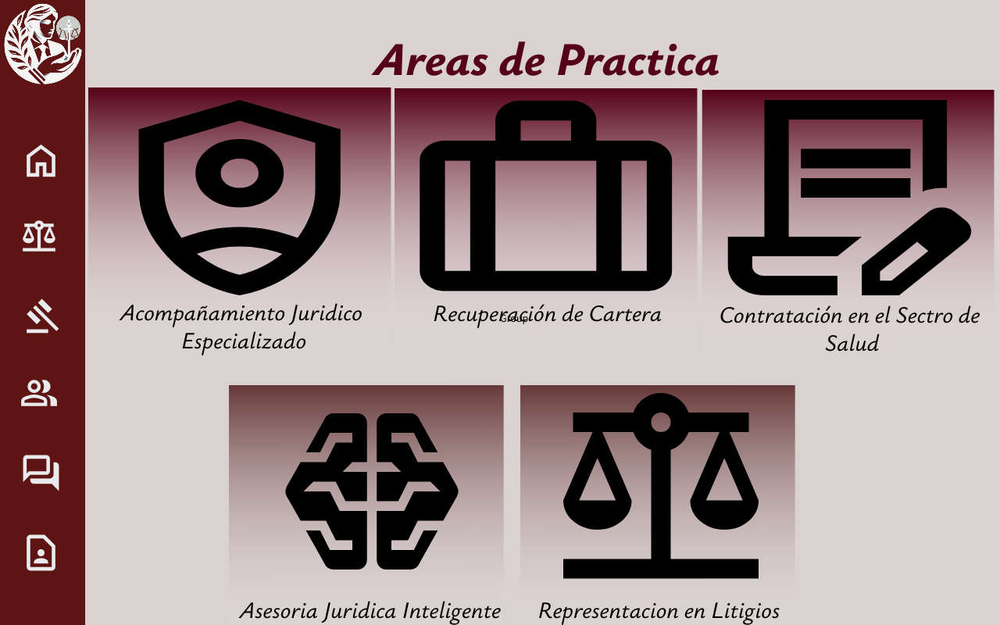
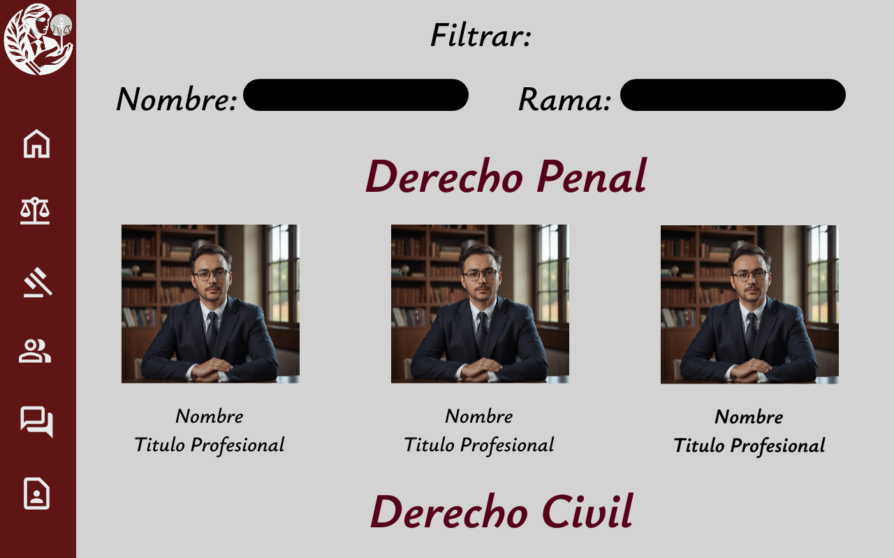
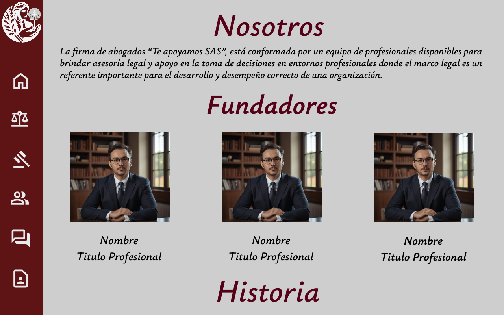
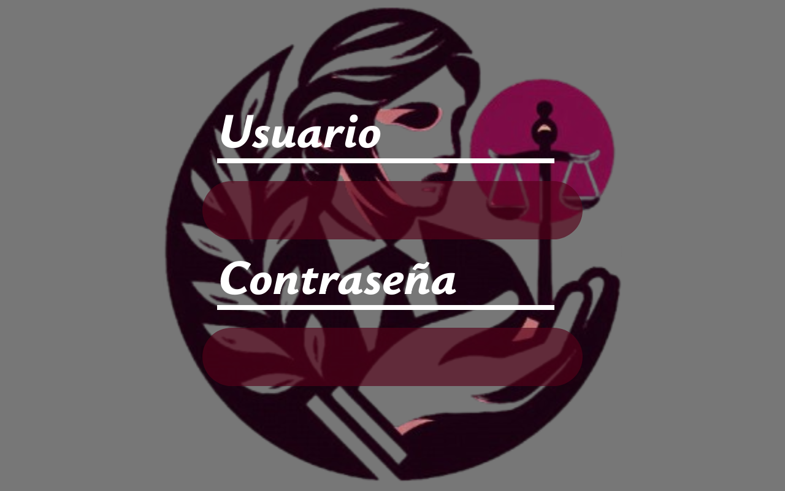
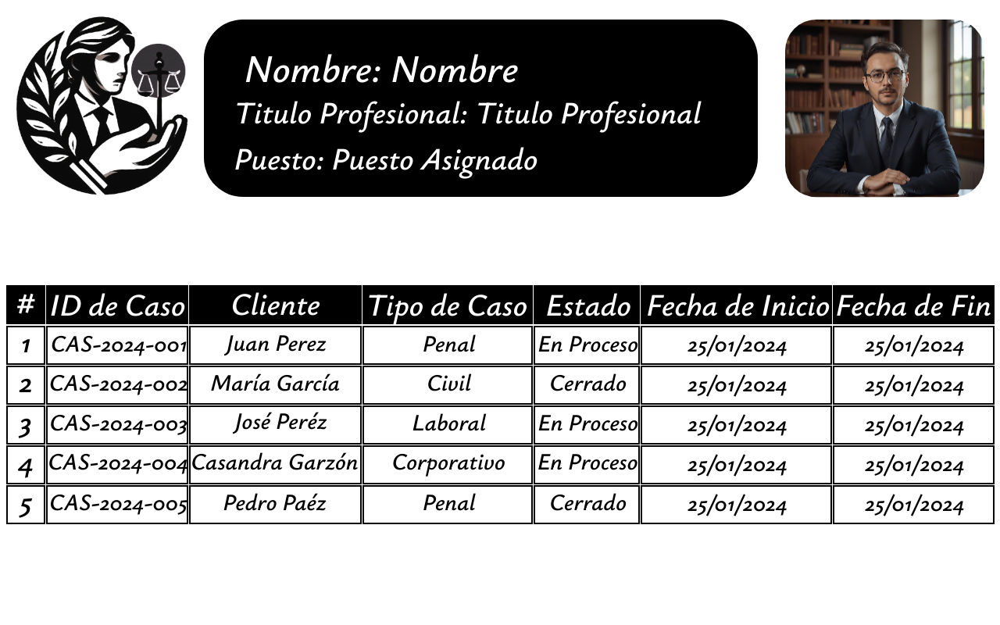
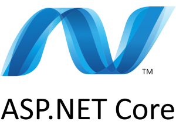

Analisis de Problema
Problematica Planteada
La firma de abogados “Te apoyamos SAS”, está conformada por un equipo de profesionales disponibles para brindar asesoría legal y apoyo en la toma de decisiones en entornos profesionales donde el marco legal es un referente importante para el desarrollo y desempeño correcto de una organización. Con el fin ampliar su cobertura de servicios, requiere el apoyo de un profesional en el desarrollo de software que le brinde una herramienta con la cual se dé a conocer en el mercado global a través de la internet. La visión general que tienen sobre la aplicación web que desean adquirir es:
- Disponer de un espacio que brinde información sobre la firma, trayectoria, servicios ofertados por la firma, noticias de interés de orden legal para el público en general, perfil general de los profesionales adscritos a la firma y su ubicación dentro del territorio Nacional, reconocimientos, alianzas y formas de contacto.
- Disponer de un espacio en donde los profesionales del gremio interesados en trabajar con la firma registren la hoja de vida para su estudio y la respectiva evaluación de la hoja de vida, en donde se valide si es aceptado no el profesional.
- Disponer de un espacio correspondiente a los procesos que se adelantan por cada profesional en donde se registren los datos del cliente, tipo de proceso que se lleva y los avances de este.
Matriz de Trazabilidad
| ID | Sub-ID | Descripción del Requisito | Versión | Estado Actual | Tipo de Requerimiento | Ultima Fecha de Estado de Registro | Nivel de Complejidad | Partes Interesadas | Nivel de Prioridad |
|---|---|---|---|---|---|---|---|---|---|
| R.F.1 | R.F.1 | Pagina de Presentación: Implementar una Página de Presentación de la Firma, en la cual se tenga una información más detallada de la misma, para que el usuario pueda conocer más a fondo la Firma. | 1.0 | Aprobado | Funcional | 16/02/2025 | Baja | Firma, Desarrollador, Administrado de Base de Datos, Cliente. | Alta |
| R.F.2 | R.F.2 | Pagina de Procesos Activos: Se creaba una Página que para su acceso se necesitara privilegios, ya que en ella se podría realizar una vista de los procesos que están activos, el estado de lo mismo y a cuál Abogado están asignados. | 1.0 | Aprobado | Funcional | 16/02/2025 | Alta | Firma, Desarrollador, Administrado de Base de Datos, Cliente. | Alta |
| R.F.3 | R.F.3 | Pagina de Postución: Implementar una Página donde los Abogados interesados en pertenecer a la firma, puedan postularse con su Hoja de Vida, y posteriormente puedan verificar el estado de la Postulación. | 1.0 | Aprobado | Funcional | 16/02/2025 | Alta | Firma, Desarrollador, Administrado de Base de Datos, Abogado, Candidato. | Alta |
| R.F.4 | R.F.4 | Base de Datos: Implementación de una Base de Datos para poder almacenar información que se presenta de los Abogados Adscritos a la Marca, Profesionales postulados a trabajos y procesos, información de la Firma, etc. | 1.0 | Aprobado | Funcional | 16/02/2025 | Alta | Firma, Desarrollador, Administrado de Base de Datos, Cliente. | Alta |
| R.NF.1 | R.NF.1 | Bominio: Implementar un Dominio que permita el fácil acceso e identificación de la Página de Firma de una manera fácil y accesible para los usuarios. | 1.0 | Aprobado | No Funcional | 16/02/2025 | Medio | Firma, Desarrollador, Cliente. | Alta |
| R.NF.2 | R.NF.2 | Diseño Responsivo: Permitir que el Diseño del Sitio Web sea Responsivo y se adapte a diferentes tipos de Dispositivos y Navegadores. | 1.0 | Aprobado | No Funcional | 16/02/2025 | Medio | Firma, Desarrollador, Cliente. | Alta |
Roles de Usuario
Cliente
Descripción: Es el que accede a la Página Web en la Búsqueda de conocer la Página Web, en búsqueda de un Servicio dado por la Firma de Abogados.
Permisos:
- Acceso a las Secciones Públicas de la Página Web.
- Petición de Servicio de Representación por un Abogado de la Firma de Abogados.
Abogado
Descripción: Es el Profesional contratado por la Firma de Abogados que puede llevar los Casos Legales que la firma le asigne.
Permisos:
- Acceso a las Secciones Públicas de la Página Web.
- Acceso a la Página de los Procesos Activos que tiene a su nombre registrados, y capacidad de actualizar información de los mismos.
Firma
Descripción: Es la Empresa que se dedica a la Representación Legal, más conocida como Firma de Abogados, esta es la Cara de todos los Abogados Adscritos a la misma.
Permisos:
- Acceso total a cualquier parte de la Página con todos los Privilegios.
- Capacidad de realizar peticiones al Desarrollador para actualizar la Página Web según la necesidad que tenga la Firma.
Desarrollador de Software
Descripción: Es el Desarrollador que se encarga de la creación de Proyecto de Software, en este caso el Sitio Web.
Permisos:
- Acceso total a cualquier parte de la Página con todos los Privilegios.
- Capacidad de realizar cambios de la Página Web y la Estructura del Proyecto según las necesidades del mismo o peticiones la Firma de Abogados.
Administrador de Base de Datos
Descripción: Es el Desarrollador que se encarga de la creación de Proyecto de Software, en este caso el Sitio Web.
Permisos:
- Cambio de la Estructura de la Base de Datos.
- Migración de Sistemas Gestores de Bases de Datos según la necesidad.
- Encargado de la integridad de los Datos que están almacenados.
Candidato
Descripción: Es un abogado que quiere pertenecer a la Firma de Abogados y accede a la Página Web con el fin de postularse y con el objetivo que lo acepten entre sus abogados.
Permisos:
- Acceso a las Secciones Públicas de la Página Web.
- Envío de Hoja de Vida para el Estudio de Curriculum.
- Acceso a Estado de Postulación.
Wireframes
Pagina Inicial
Página de Inicio, es la Página del Sitio Web que da la bienvenida a todos los que ingresen a la Pagana de la Firma de Abogados, en esta se presente una Header con los enlaces a las principales secciones del Sitio Web acompañadas al inicio del Logo de la Firma de Abogados, en el Body de la Página podemos ver una frase que representa a la Firma y un botón para que pueda el usuario desplazarse directamente a solicitar una Asesoría.
Servicios

Página de Servicios, es la Página donde se pueden ver un Listado de los Servicios que brinda la Firma, destacando al inicio los Servicios en los que mejores servicios brindan y después un listado del resto de servicios que tienen para ofrecer como firma. En esta Página el Hender cambiar de posición, de la parte superior al lateral izquierdo para brindar un diseño un poco diferente y destacado, permitiendo una interfaz más limpia.
Abogados

Página de Abogados, en esta Página se podrá ver todos los Abogados que tiene la firma, con la separación por las Ramas Legales en las que están encargados, además de una sección en la parte superior para poder hacer filtros. En esta Página el Header cambiar de posición, de la parte superior al lateral izquierdo para brindar un diseño un poco diferente y destacado, permitiendo una interfaz más limpia.
Nosotros

Página de Nosotros, en esta Página se muestra información de la Firma, yendo desde una breve descripción, los Fundadores y la Historia de Fundación de la misma. En esta Página el Header cambiar de posición, de la parte superior al lateral izquierdo para brindar un diseño un poco diferente y destacado, permitiendo una interfaz más limpia.
Contacto
Página de Contacto, en esta Página se tendrá un Chat con implementación de IA, que le brindara un apoyo de la información que puedan necesitar los usuarios. En esta Página el Header cambiar de posición, de la parte superior al lateral izquierdo para brindar un diseño un poco diferente y destacado, permitiendo una interfaz más limpia.
Postulaciones
Página de Postulación, en esta Página los interesados de pertenecer a la Firma de Abogados podrán enviar sus hojas de vida para que sean estudiadas y posteriormente se les mande una respuesta de la postulación. En esta Página el Header cambiar de posición, de la parte superior al lateral izquierdo para brindar un diseño un poco diferente y destacado, permitiendo una interfaz más limpia.
Login Procesos Internos

Página de Logueo, en esta Página es una Página Interna, por ello en las secciones públicas no se muestra referencia a ella, está en una dirección específica del Sitio Web, este está pensada para dar acceso a información de los Casos de los Abogados, y como método de seguridad y para la búsqueda de los casos se utiliza el Logueo. En esta Página el Header cambiar de posición, de la parte superior al lateral izquierdo para brindar un diseño un poco diferente y destacado, permitiendo una interfaz más limpia.
Procesos Asignados

Página de Procesos Asignados, en esta Página los abogados van a poder ver información de sus casos asignados. En esta Página el Header cambiar de posición, de la parte superior al lateral izquierdo para brindar un diseño un poco diferente y destacado, permitiendo una interfaz más limpia.
Frameworks
Bootstrap

Bootstrap es un Framwork de CSS que se Gestiona desde las Plantillas, y su objetivo es facilitar la aplicacion de Diseño a una Pagina Web
Flask
Flask es un Framework de Python que se usa principalmente para la Gestion de Rutas, Solicitudes y Respuestas a protocolos HTTP. Este Framework ademas permite el uso del Motor de Plantillas Jinja, lo que facilita insertar logica en plantillas HTML.
Larabel

Larabel es un Framework de PHP que para el Desarrollo Web que brinda una estructura donde se separa un Proyecto en partes, como las Vistas de Usuario, Controladores que manejan las Solicitudes de los Usuarios y los Modelos que Gestionan los Datos.
ASP .NET

ASP .NET es un Framework de C#, sus Siglas hacen referencia a Active Server Pages Network Enabled Technologies que en español es (Tecnologias Habilidades para Redes de Paginas de Servidores Activas). Su principal funcion es la creacion de Paginas Web Dinamicas, APIs y Servicios en la Nube, al ser Desarrollado por Microsoft tiene versiones esclusivas de solo uso en Windows, pero tambien una version Core que funciona en otras Plataformas como Linux o Mac.